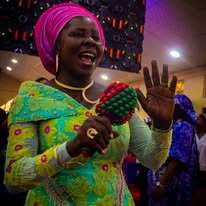

Church Gallery



Where faith is alive, hope is restored, and destinies are transformed.
Living Faith Church Ibafo (Winners Chapel) is a vibrant family of believers with a passion to see lives changed through the Word of Faith and the power of the Holy Spirit.
At Living Faith Church Ibafo, we are more than just a gathering of believers — we are a family of faith, love, and purpose. Rooted in the life-transforming teachings of God’s Word, we exist to raise people of power, purpose, and impact who will reign in life through Christ Jesus.
Our vision is driven by a divine mandate received by God’s servant, Bishop David O. Oyedepo, to “liberate the world from all oppressions of the devil through the preaching of the Word of Faith.” Here at Ibafo, we carry that same torch with passion — bringing light, healing, and hope to our community and beyond.
We are committed to:
Every service at Living Faith Church Ibafo is a refreshing encounter with God’s presence — filled with heartfelt worship, inspiring testimonies, and powerful teachings that ignite faith. Whether it’s a Sunday celebration, midweek Word encounter, or one of our special programs, you will always experience the atmosphere of God’s glory.
No matter who you are or where you come from, there’s a place for you here. Our arms are open wide to welcome you into a loving community that believes in you, prays for you, and walks with you as you fulfill your divine destiny. At Living Faith Church Ibafo, you will discover purpose, experience transformation, and find your home in God’s kingdom.
✨ “For whatsoever is born of God overcometh the world: and this is the victory that overcometh the world, even our faith.” — 1 John 5:4